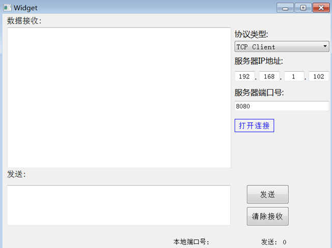

原文连接:https://www.cnblogs.com/lifexy/p/11317662.html
8.9更新说明
如下图所示,支持十六进制收发,下载地址已经更新.源码下载地址:https://download.csdn.net/download/qq_37997682/11504836
在上章 48.QT-网络通信讲解1,我们学习了网络通信基础后,本章便来实战一篇.
PS:支持客户端和服务器,提供源码,并且服务器支持多客户端连入,并且可以指定与个别客户端发送数据,也可以给所有连入的客户端发送数据.
1.效果图所下所示:

如下图所示,当服务器状态下,如果有客户端连入,会提示客户端信息:
2.效果操作
客户端操作:
服务器操作:
4.png)
从上面操作可以看出,服务器支持多客户端连入,并且可以指定与个别客户端发送数据,也可以给所有连入的客户端发送数据.
3.首先创建UI
4.注意事项
不管是服务器还是客户端,都可以通过peerAddress()和peerPort()来获取目标地址和目标端口
4.1服务器监听时
比如服务器,则可以通过QTcpSocket的peerAddress()则可以获取连入的客户端地址
也可以通过children()来获取所有连入的客户端(需要注意的是也会获取到服务器本身的tcp地址和端口),示例如下:
QList<QTcpSocket *> m_tcps = m_server.findChildren<QTcpSocket *>(); foreach (QTcpSocket *tcp, m_tcps) { qDebug() << "Address:" << tcp->peerAddress (); qDebug() << "Port:" << tcp->peerPort (); }
如果我们只向连入的客户端某个端口发送数据时,就可以通过上面的方式筛选出来.
这样做的话如果觉得很麻烦,也可以将之前连接上的客户端存到QList里再进行筛选.
4.2 QTcpSocket步骤
- 首先通过connectToHost()来连接服务器.
- 然后调用waitForConnected()来判断是否连接服务器超时
- 当我们接收到服务器数据的时候,则会发出readyRead()信号,然后再进行read ()读取发来的数据
- 发送数据时,则调用write()函数进行发送,当bytesWritten()信号函数触发时,便可以获取成功发送的数据长度.
注意:如果read到的数据长度量不是自己想要的,此时我们便可以通过bytesAvailable()来读取接收到的数据长度量.当达到多少时,再进行read ()读取.
4.3 QTcpServer步骤
- 首先通过listen(QHostAddress::AnyIPv4, port)来监听所有来自IPV4的客户端
- 当有新的客户端连接服务器的时候,会自动触发newConnection()信号函数,然后我们可以通过通过QTcpSocket * nextPendingConnection()成员函数来获取当前连接上的新的客户端类.然后再对QTcpSocket来进行信号槽绑定
- 当客户端发来数据的时候,则可以通过我们定义的onServerDataReady()来读取数据
- 当我们向某个连接的客户端发送数据时,则通过m_server.findChildren()来筛选出来,然后write即可.
5.代码介绍
5.1 头文件介绍
#ifndef WIDGET_H
#define WIDGET_H
#include <QWidget>
#include <QTcpSocket>
#include <QTcpServer>
#include <QMessageBox>
namespace Ui {
class Widget;
}
class Widget : public QWidget
{
Q_OBJECT
QTcpSocket m_client;
QTcpServer m_server;
QString targetAddr;
int targetPort;
public:
explicit Widget(QWidget *parent = 0);
~Widget();
private slots:
void on_btn_switch_clicked();
void on_tcpMode_currentIndexChanged(int index);
void on_btn_send_clicked(); //发送按钮
void on_betn_clear_clicked(); //清空按钮
//客户端槽函数
void onClientConnected();
void onClientDisconnected();
void onClientDataReady();
void onClientBytesWritten(qint64 bytes);
void onClientErr(QAbstractSocket::SocketError socketError);
//服务器槽函数
void onServerNewConnection();
void onServerConnected();
void onServerDisconnected();
void onServerDataReady();
void onServerBytesWritten(qint64 bytes);
private:
void startConnect(bool ison);
void initClientSignals(); //初始化客户端信号槽
bool startClient(); //启动客户端
void initServerSignals(); //初始化客户端信号槽
bool startServer(); //启动服务器
Ui::Widget *ui;
};
#endif // WIDGET_H5.2 widget.cpp介绍
该cpp主要是用来处理界面操作的函数
#include "widget.h" #include "ui_widget.h" Widget::Widget(QWidget *parent) : QWidget(parent), ui(new Ui::Widget) { ui->setupUi(this); startConnect(false); on_tcpMode_currentIndexChanged(0); initClientSignals(); //初始化客户端信号槽 initServerSignals(); //初始化服务器信号槽 //限制只能数字输入 QRegExp regx("[0-9]+$"); QValidator *validator = new QRegExpValidator(regx, this ); ui->ipAddr1->setValidator( validator ); ui->ipAddr2->setValidator( validator ); ui->ipAddr3->setValidator( validator ); ui->ipAddr4->setValidator( validator ); ui->ipPort->setValidator( validator ); } void Widget::on_tcpMode_currentIndexChanged(int index) { if(index==0) //clent { ui->ipPortLabel->setText("服务器端口号:"); ui->ipAddLabel->show(); ui->ipAdds->show(); ui->targetLabel->hide(); ui->targetObject->hide(); } else { ui->ipAddLabel->hide(); ui->ipAdds->hide(); ui->ipPortLabel->setText("本地端口号:"); } } void Widget::on_btn_switch_clicked() //切换连接开关 { bool ret; if(ui->btn_switch->text()=="打开连接") { if(ui->tcpMode->currentIndex()==0) //启动客户端 ret=startClient() ; else ret=startServer(); if(ret) startConnect(true); } else { if(ui->tcpMode->currentIndex()==0) //启动客户端 m_client.close(); else { if( m_server.isListening() ) { QList<QTcpSocket *> m_tcps = m_server.findChildren<QTcpSocket *>(); foreach (QTcpSocket *tcp, m_tcps) { tcp->close(); } m_server.close(); } } startConnect(false); } } void Widget::startConnect(bool ison) { if(!ison) { ui->btn_switch->setStyleSheet("color:blue;border: 1px solid blue"); ui->btn_switch->setText("打开连接"); //使能 ui->ipAddr1->setEnabled(true); ui->ipAddr2->setEnabled(true); ui->ipAddr3->setEnabled(true); ui->ipAddr4->setEnabled(true); ui->tcpMode->setEnabled(true); ui->ipPort->setEnabled(true); ui->localPort->setText(""); } else { ui->btn_switch->setStyleSheet("color:red;border: 1px solid red"); ui->btn_switch->setText("关闭连接"); //失能 ui->ipAddr1->setEnabled(false); ui->ipAddr2->setEnabled(false); ui->ipAddr3->setEnabled(false); ui->ipAddr4->setEnabled(false); ui->tcpMode->setEnabled(false); ui->ipPort->setEnabled(false); targetAddr=""; targetPort=0; ui->sendLenLabel->setText("0"); } } void Widget::on_betn_clear_clicked() { ui->recvEdit->clear(); targetAddr=""; targetPort=0; } void Widget::on_btn_send_clicked() { if(ui->btn_switch->text()!="打开连接") { if(ui->tcpMode->currentIndex()==0) //客户端 { m_client.write(ui->sendEdit->toPlainText().toLocal8Bit(),ui->sendEdit->toPlainText().toLocal8Bit().length()); } else { if(ui->targetObject->currentText()!="所有对象") { QList<QTcpSocket *> m_tcps = m_server.findChildren<QTcpSocket *>(); foreach (QTcpSocket *tcp, m_tcps) { if(ui->targetObject->currentText() == tcp->objectName()) { tcp->write(ui->sendEdit->toPlainText().toLocal8Bit(),ui->sendEdit->toPlainText().toLocal8Bit().length()); break; } } } else //所有连接上的客户端都发送一遍 { QList<QTcpSocket *> m_tcps = m_server.findChildren<QTcpSocket *>(); foreach (QTcpSocket *tcp, m_tcps) { tcp->write(ui->sendEdit->toPlainText().toLocal8Bit(),ui->sendEdit->toPlainText().toLocal8Bit().length()); } } } } } Widget::~Widget() { QList<QTcpSocket *> m_tcps = m_server.findChildren<QTcpSocket *>(); foreach (QTcpSocket *tcp, m_tcps) { tcp->close(); } if(m_client.isOpen()) { m_client.close(); qDebug()<<"m_client close"; } delete ui; }
5.3 clentHandler.cpp介绍
该cpp主要用来处理客户端操作相关的文件.
#include "widget.h" #include "ui_widget.h" void Widget::initClientSignals() //初始化客户端信号槽 { connect(&m_client, SIGNAL(connected()), this, SLOT(onClientConnected())); connect(&m_client, SIGNAL(disconnected()), this, SLOT(onClientDisconnected())); connect(&m_client, SIGNAL(readyRead()), this, SLOT(onClientDataReady())); connect(&m_client, SIGNAL(bytesWritten(qint64)), this, SLOT(onClientBytesWritten(qint64))); connect(&m_client, SIGNAL(error(QAbstractSocket::SocketError )), this, SLOT(onClientErr(QAbstractSocket::SocketError))); } bool Widget::startClient() //启动客户端 { QString ip = QString("%1.%2.%3.%4").arg(ui->ipAddr1->text()).arg(ui->ipAddr2->text()).arg(ui->ipAddr3->text()).arg(ui->ipAddr4->text()); qDebug()<<ip; m_client.connectToHost(ip, ui->ipPort->text().toInt()); if(m_client.waitForConnected(800)) { return true; } else { QMessageBox::information(this,"提示",QString("连接超时"),QMessageBox::Ok); return false; } } void Widget::onClientConnected() { startConnect(true); QMessageBox::information(this,"提示","连接成功",QMessageBox::Ok); ui->localPort->setText(QString("%1").arg(m_client.localPort())); //显示本地端口号 } void Widget::onClientDisconnected() { startConnect(false); QMessageBox::information(this,"提示","断开完成",QMessageBox::Ok); } void Widget::onClientDataReady() { if(m_client.peerAddress().toString()!=targetAddr || m_client.peerPort()!=targetPort ) { targetAddr = m_client.peerAddress().toString(); targetPort = m_client.peerPort(); ui->recvEdit->insertPlainText("[接受来自"+ targetAddr+":"+QString("%1").arg(targetPort)+"]:\r\n"); } ui->recvEdit->moveCursor(QTextCursor::End); ui->recvEdit->insertPlainText(QString::fromLocal8Bit(m_client.readAll())+"\r\n"); } void Widget::onClientBytesWritten(qint64 bytes) { qDebug() << "onBytesWritten:" << bytes; ui->sendLenLabel->setText(QString("%1").arg(ui->sendLenLabel->text().toInt()+bytes)); } void Widget::onClientErr(QAbstractSocket::SocketError socketError) { qDebug()<<"onClientErr:"<<socketError; m_client.close(); startConnect(false); QMessageBox::information(this,"提示",QString("连接失败:%1").arg((int)socketError),QMessageBox::Ok); }
5.4 serverHandler.cpp介绍
该cpp主要用来处理服务器操作相关的文件
#include "widget.h" #include "ui_widget.h" void Widget::initServerSignals() //初始化信号槽 { connect(&m_server, SIGNAL(newConnection()), this, SLOT(onServerNewConnection())); } bool Widget::startServer() //启动服务器 { if(m_server.listen(QHostAddress::AnyIPv4,ui->ipPort->text().toInt())) //只监听IPV4的所有客户端 { ui->targetLabel->show(); ui->targetObject->show(); ui->localPort->setText(QString("%1").arg(m_server.serverPort())); return true; } else return false; } void Widget::onServerNewConnection() { qDebug() << "onNewConnection"; QTcpSocket* tcp = m_server.nextPendingConnection(); //获取新的客户端信息 QString info=tcp->peerAddress().toString()+":"+QString("%1").arg(tcp->peerPort()); ui->targetObject->addItem(info); QMessageBox::information(this,"提示",QString("新的客户端连入:%1").arg(info),QMessageBox::Ok); tcp->setObjectName(info); //设置名称,方便查找 connect(tcp, SIGNAL(connected()), this, SLOT(onServerConnected())); connect(tcp, SIGNAL(disconnected()), this, SLOT(onServerDisconnected())); connect(tcp, SIGNAL(readyRead()), this, SLOT(onServerDataReady())); connect(tcp, SIGNAL(bytesWritten(qint64)), this, SLOT(onServerBytesWritten(qint64))); } void Widget::onServerConnected() { } void Widget::onServerDisconnected() { QTcpSocket* tcp = dynamic_cast<QTcpSocket*>(sender()); if( tcp != NULL ) //从连接对象中移除掉 { qDebug() << "onServerDisconnected"; qDebug() << "Local Address:" << tcp->peerAddress(); qDebug() << "Local Port:" << tcp->peerPort(); QString info=tcp->peerAddress().toString()+":"+QString("%1").arg(tcp->peerPort()); QMessageBox::information(this,"提示",QString("客户端断开连接:%1").arg(info),QMessageBox::Ok); int index = ui-> targetObject ->findText(info); if(index>=0) ui->targetObject->removeItem(index); } } void Widget::onServerDataReady() { QTcpSocket* tcp = dynamic_cast<QTcpSocket*>(sender()); if(tcp->peerAddress().toString()!=targetAddr || tcp->peerPort()!=targetPort ) { targetAddr = tcp->peerAddress().toString(); targetPort = tcp->peerPort(); ui->recvEdit->insertPlainText("[接受来自"+ targetAddr+":"+QString("%1").arg(targetPort)+"]:\r\n"); } ui->recvEdit->moveCursor(QTextCursor::End); ui->recvEdit->insertPlainText(QString::fromLocal8Bit(tcp->readAll())+"\r\n"); } void Widget::onServerBytesWritten(qint64 bytes) { qDebug() << "onBytesWritten:" << bytes; ui->sendLenLabel->setText(QString("%1").arg(ui->sendLenLabel->text().toInt()+bytes)); }